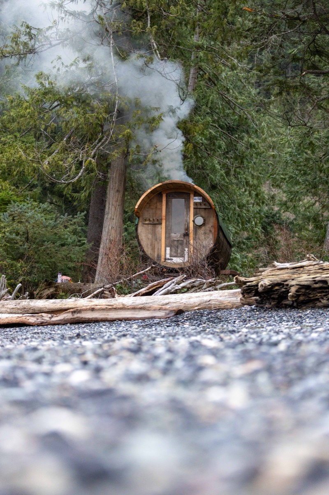

Whistler in summer is a different town: bikes on every car, lakes full of paddleboards, and daylight until late. It's also a great time for a sauna, and most visitors never think of it.
Why sauna in summer?
A sauna in July sounds counterintuitive, but people in Finland sauna all summer long, often by a lake. After a big day outside, the heat relaxes tired legs and backs, and the cool-down part of the ritual is even better when the evening air is warm and the lake is right there. It's the slow, social end to a fast day.
After the bike park
A day of laps in the Whistler Mountain Bike Park beats you up: forearms, hands, shoulders and legs all take a pounding. A few sauna rounds and a cold plunge at the end of the day are a great way to come back down. Clean up first, eat something, drink plenty of water, and go easy on round one. If you've crashed and something is swollen, ice that, don't heat it.
After a hike
Coming down from the alpine, or off any of the long trails around Whistler and Pemberton, your legs will love some heat. Keep the first round short if you've been in the sun all day and are low on water.

Lakes for cooling off
Whistler is full of lakes that are perfect for a swim between rounds or after your session. Alta Lake, Lost Lake, Alpha Lake and Nita Lake are all local favourites, with parks and docks around them. Glacier-fed Green Lake is colder and more remote. Swim where you can get out easily, never swim alone, and remember there are no lifeguards at most spots.
Or skip the drive: a mobile sauna rental comes with its own cold plunge tub, set up right next to the sauna.
How to sauna on a hot day
- Hydrate more than you think. Sun plus sauna is a lot of sweating. Drink water before, between and after.
- Shorter rounds. 5–10 minutes is plenty when it's already warm out.
- Sauna in the evening. Fire it up as the day cools and enjoy the long light.
- Shade for resting. Set up a spot in the shade for between rounds.
- Wear a hat. A felt sauna hat keeps your head comfortable in the heat.
- Fire safety matters more in summer. Keep the area around the stove clear, follow local fire restrictions, and never leave a fire unattended.
Make it a group night
The barrel sauna fits about 8 people, and the 24-hour booking means you can do an evening session after the bike park and another in the morning before you head home. A week is $1,500 if you want it waiting for you every night of your trip.
Staying in a rental? Read what to know before renting a sauna for your Whistler cabin or Airbnb first.
Questions
Is it worth using a sauna in summer?
Yes. A sauna is just as relaxing after a day of biking or hiking as after skiing, and long summer evenings make the cool-down part of the ritual even better. Just drink more water and keep rounds a little shorter on hot days.
Where can you cool off after a sauna in Whistler?
Whistler's lakes, including Alta Lake, Lost Lake, Alpha Lake and Nita Lake, are popular for summer swims. A mobile sauna rental also comes with its own cold plunge tub.
Can I get a sauna delivered to my Whistler rental in summer?
Yes. Mamquam Sauna delivers year-round in Whistler, Squamish and Pemberton. If you're in a rental, get your host's permission first and describe the setup spot in your booking request.
More reading: Sauna in Pemberton: A Private Wood-Fired Sauna, Delivered · A Whistler Wellness Weekend: 2-Day Itinerary